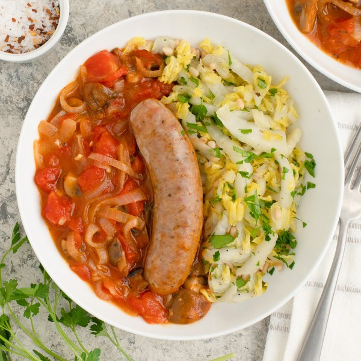

Baked Italian Sausage, Tomato & Mushroom Skillet with Sautéed Cabbage

Prep Time
35 min
Nutrition (per serving)
590.9 kcalCalories
28.6 gProtein
28.9 gCarbs
43 gFat
Full nutrition table
| Calories | 590.9 kcal |
| Total fat | 43 g |
| Saturated fat | 15.3 g |
| Trans fat | 0.5 g |
| Cholesterol | 102.2 mg |
| Sodium | 759.2 mg |
| Carbohydrates | 28.9 g |
| Fiber | 8.9 g |
| Sugars | 11.9 g |
| Protein | 28.6 g |
| Potassium | 1914.3 mg |
| Calcium | 304 mg |
| Iron | 5.8 mg |
| Vitamin A | 1618.6 IU |
| Vitamin C | 106.4 mg |
| Vitamin D | 35.2 IU |
Cookware
Ingredients
- 8 fl ozchicken or vegetable broth
- 1 lbcremini mushrooms
- 2 (14.5 oz) cansdiced tomatoes
- 4 clovesgarlic
- 1 small bunchItalian (flat-leaf) parsley
- 1 medium headnapa cabbage
- ¼ cuppine nuts
- 4pork sausages
- 1 mediumyellow onion
- all-purpose flour
- black pepper
- butter, unsalted
- crushed red pepper
- Italian seasoning
- salt
Steps
- Preheat oven to 450°F.
- Wash and dry the fresh produce.1 lb cremini mushrooms
1 medium head napa cabbage
1 small bunch Italian (flat-leaf) parsley - Peel, halve, and slice onion into thin half-moons; peel and mince garlic. Place both in a medium bowl.1 medium yellow onion
4 cloves garlic - Preheat a large ovenproof skillet over medium-high heat.
- While the skillet heats up, quarter mushrooms; add to the bowl with the onion and garlic.
- Once the skillet is hot, add butter and swirl to coat the bottom. Add veggies and cook, stirring occasionally, until softened, 2-3 minutes.4 tsp butter, unsalted
- Add flour to the skillet and continue to cook, stirring frequently, until fragrant, 1 minute more.2 tbsp all-purpose flour
- Add tomatoes, broth, and spices to the skillet; stir to combine, then bring to a simmer.2 (14.5 oz) cans diced tomatoes
8 fl oz (1 cup) chicken or vegetable broth
2 tsp Italian seasoning
1 tsp salt
½ tsp black pepper
⅛ tsp crushed red pepper - Once simmering, nestle sausages into the veggies and place skillet in the oven (it doesn't have to be fully heated). Bake, flipping sausages once, until golden and cooked through, 15-18 minutes. Remove from oven.4 pork sausages
- Meanwhile, trim off and discard root end of the cabbage; halve lengthwise, then slice crosswise into thin (shred-like) strips.
- Preheat another large skillet over medium heat.
- Once the skillet is hot, add more butter and swirl to coat the bottom. Add cabbage and spices; cook, stirring occasionally, until tender, 3-4 minutes.2 tbsp butter, unsalted
½ tsp Italian seasoning
¼ tsp salt
¼ tsp black pepper - Meanwhile, shave parsley leaves off the stems; discard stems and mince the leaves.
- Once the cabbage is done, add pine nuts and parsley to the skillet; stir to combine. Remove from heat and cover to keep warm.¼ cup pine nuts
- To serve, divide veggie skillet and sautéed cabbage between plates or bowls; top with sausages and enjoy!